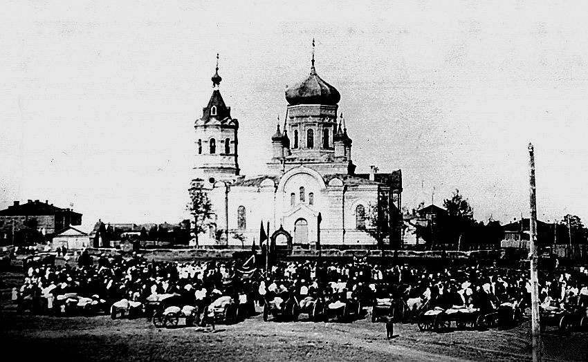
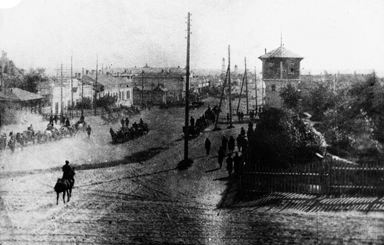
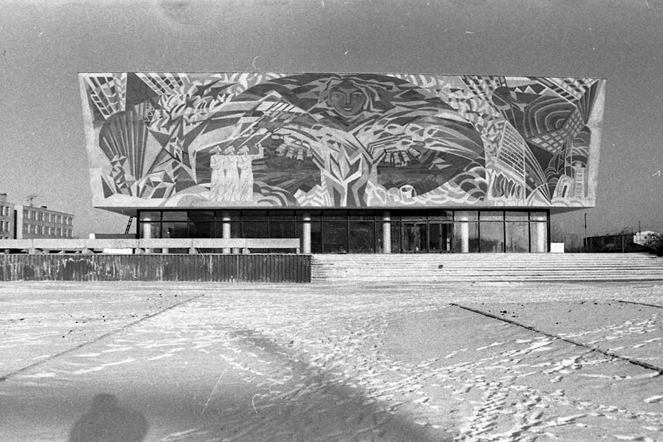

Kostanay (科斯塔奈)
1868年

科斯塔奈市的历史可以追溯到遥远的1868年，即1868年10月21日，皇帝亚历山大二世的政府颁布了《奥伦堡和西西伯利亚总督草原地区管理暂行规定》。该文件规定将奥伦堡总督分为两个地区 - 乌拉尔和图尔盖。 1879 年 12 月，总督 N.A. Kryzhanovsky 同意建造定居点。 1879 年夏天，来自奥伦堡的第一批定居者抵达了计划开发的地点——超过 1,000 人。抵达的定居者在托博尔河左岸定居。这里对于新城的建设来说是一个相当方便的地方，因为那里有大量的石头和石板可以用来建造。建设按计划进行，1893 年该定居点获得了名为尼古拉耶夫斯克的城市的官方地位。尼古拉耶夫斯克这个名字带来了许多不便，特别是邮局的工作，因为俄罗斯有几个城市同名。因此，在 1895 年 2 月，根据俄罗斯末代皇帝的最高命令，新尼古拉耶夫斯克市被命名为库斯塔奈，该地区被命名为库斯塔奈。
1895年
城镇居民富裕了，城市发展了，商人的房子增加了。从 20 世纪初开始的一些建筑例子一直保存到今天 - 商人 Yaushev 的前贸易商行、一座清真寺、Furor 电影院大楼，现在是俄罗斯戏剧院的所在地，以及其他一些历史和文化建筑。对象。伟大卫国战争期间，苏联的企业撤到了这座城市——来自赫尔松的布尔什维奇卡制衣厂，来自辛菲罗波尔的制革厂的部分设备，以及来自克林的短纤和人造纤维厂。正是这些疏散的工厂和工厂为草原城市的工业基础设施奠定了基础，并推动了其经济的自动发展。自 1950 年代中期以来，交通开始发展——空中交通和道路建设。处女地和休耕地的开发对城市的发展产生了巨大的影响。库斯塔奈是处女史诗的中心之一。正是在这一时期，库斯塔奈地区迅速发展成为农业和工业区。
1911年
这座城市发展迅速，到 20 世纪初，这座城市拥有当时发达的基础设施。一个有趣的事实是，这座城市有一家啤酒厂，它是由瑞士人建造的，在 20 世纪初，它是整个南乌拉尔和现代哈萨克斯坦领土上的一家大型工厂。这座城市有学校、商店、集市等等，这让它拥有了城市的地位。这座城市是一个主要的贸易中心，是连接亚洲和俄罗斯的重要纽带。 1911 年，超过 25,000 人居住在库斯塔奈——是阿克莫林斯克的两倍。这座城市是多民族的；哈萨克人和俄罗斯人，布哈拉人和波兰人，巴什基尔人和鞑靼人，以及其他民族并肩生活。许多商队路线汇聚于此，工匠们工作，商人蓬勃发展——当地的集市在整个乌拉尔都很有名。
1997年
在 1954 年至 1956 年期间，约有 40 个民族的 15 万多名新定居者抵达库斯塔奈地区。据人口普查资料，1959年全区人口已达710,690人。 1997年6月17日，根据哈萨克斯坦总统令，库斯塔奈市的俄文名称改为库斯塔奈市，库斯塔奈地区的名称改为库斯塔奈地区。 在庆祝科斯塔奈市成立100周年之际，批准了该市的徽章。今天，科斯塔奈是哈萨克斯坦的一个大型行政中心，该地区是最大的粮食作物供应国。科斯塔奈是一座拥有现代建筑的现代城市。